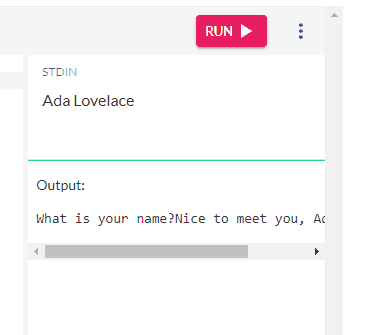

1.4 Basic Operators and Expressions
Contents
1.4 Basic Operators and Expressions#
Growing up we learn basic mathematical operations like addition, subtraction, multiplication, and division. For example, using basic math, we would look at the following statement:
\( 40 + 2 \)
And say the answer is 42. With computers, we need to store that answer in memory, so we are given the Assignment Operator, the = sign! As such, if I want to store that value, I use the following
meaning = 40+2
what we have is is the Expression 40+2, using the addition + operator, and then using the = we assign value to the variable meaning. Programming has the basic operators we learn growing up.
Operator |
Name |
|---|---|
+ |
Addition |
- |
Subtraction |
* |
Multiplication |
/ |
Division |
= |
Assignment |
You will note that * is multiplication, and not x that is because how would one distinguish a variable x from the operator x? As such, we have to use unique characters.
Note
Python uses PEMDAS for order of evaluation.
P - Parentheses
E - Exponentiation
M - Multiplication
D - Division
A - Addition
S - Subtraction
So parentheses get evaluated first, and so on down the line. Another way to remember is the mnemonic, “Please Excuse My Dear Aunt Sally”. With that said, if you are trying to figure out the order of evaluation for an expression, the simple answer is you probably can write it better by using parentheses. Always remember, clarity before brevity.
Use parentheses when dealing with order of evaluation. Clarity before brevity!
Practice#
Tasks
Using the following programming window try the following. You should run after each task, not after all the lines!
Write a statement that assigns your name to the variable
name.Print out the your name as “Hello, name”. With name using the variable.
Write a statement that assigns your age to the variable
age.Modify the previous print statement to say using the variables, “I am name, and I am age years old.”.
You may need to move the print statement, remember things are executed in order!Modify the age assignment to be calculated by the current year, minus the year you were born, and then assign the answer to
age.
Use the ‘click to show’ to get a code editor below.
Solution#
name = "Trillian Astra"
age = 2022 - 1980
print(f"I am {name}, and I am {age} years old.") # remember last section on f-string
I am Trillian Astra, and I am 42 years old.
Types#
Without knowing it, we have looked at numeric types and the string type. Anytime, you type in a number without quotes, you end up with a numeric. Let’s look at string more.
String#
A string can be any sequence of characters (look at your keyboard, those are all characters). However, given that programming using a set syntax/grammar how would I know the variable meaning as compared to a string meaning? As such, most languages define using the quote or double character as defining a string. For example:
meaning = 42
a_string = "meaning"
print(meaning)
print(a_string)
42
meaning
In python, you can use either the single quote ' or the double quote " to define a string, as long as you start and end with the same one! This helps us in cases like the following:
quote = 'And he replied, "As you wish."'
conjunc = "Isn't python cool?"
print(quote)
print(conjunc)
And he replied, "As you wish."
Isn't python cool?
In this book, we will most often use double quotes for strings with more than one character, and single quote for single character strings. While there are style conventions for python, which type of quote to use is intentionally not defined in the style convention, other than pick one style and stick to it.
Adding Strings - Concatenation#
You can also add strings together called Concatenation. For example, let’s take two strings.
first = "Trillian"
last = "Astra"
If I wanted to make a single variable I could do the following.
name = first + last
print(name)
TrillianAstra
Error
Wait! That didn’t work how I wanted!!
Did I specify a space between the two strings? No, I didn’t, and computer wouldn’t know unless I am exact! As such to do the above properly, I should do the following.
name = first + ' ' + last # the space is a single character string
print(name)
Trillian Astra
Alternative to String Concatenation - f-String#
You can use the format string (f-string) as a way to concatenate, especially if you know the exact pattern you want your string to look like.
name2 = f"{first} {last}"
print(name2)
Trillian Astra
Special Characters#
There are a number of special hidden characters you use all the time. Tab and the newline character being the most common. In most languages, including python, they are represented by the \t for tab, and \n for the new line. This also means to represent the backslash, you have use \\. For example:
line1 = "hello\n"
line2 = "\tworld\n¯\\_(ツ)_/¯"
print(line1 + line2)
hello
world
¯\_(ツ)_/¯
Thinking deeper, the
print()function adds\nto the end of all your strings!
Trace the Code Execution#
Use the toggle below to see the full code execution step by step.
Introducing input()#
We have already given you function, the print() function, which displays text output onto the console/screen. However, what if we wanted to get information from our client, most notably, values from what they type on a keyboard? Python has the input() function. By default, it takes a message you want to display as a Parameter, and it first calls print() with that message, and then waits for the client to type. When the client hits enter, the value is returned to your code so you can store it in a variable. For example:
name = input("What is your name? ")
print("Nice to meet you, {name}.")
Now run the code yourself! Change Ada Lovelace to your name in the STDIN block before clicking run.
Show Run Example:

Warning
When looking at code through the browser based code window, newline returns end up getting removed. The above example may be better written it in an IDE or directly in the python interpreter to have a more interactive experience.
input() with numbers#
As a reminder, input returns a string which is not the same as a numeric type. So let’s assume for the following input, someone enters \(1980\) in the input below.
born_year = input("What year were you born in? ")
current_year = input("What year is it currently? ")
age = current_year - born_year
print(f"My age in {current_year} is {age}.")
---------------------------------------------------------------------------
TypeError Traceback (most recent call last)
Input In [10], in <module>
----> 1 age = current_year - born_year
2 print(f"My age in {current_year} is {age}.")
TypeError: unsupported operand type(s) for -: 'str' and 'str'
The error above is generated! This is because it doesn’t make sense to subtract a string from a string, and input() always provides strings! For now we will learn to cast the string to int() if the input is supposed to be a whole number (no decimal places) or a float() for numbers with decimal places. As such, code above would be converted to the following:
born_year_str = input("What year were you born in? ")
born_year = int(born_year_str)
current_year_str = input("What year is it currently? ")
current_year = int(current_year_str)
age = current_year - born_year
print(f"My age in {current_year} is {age}.")
Visualization#
For this visualization, the inputs are fixed to 1980 and 2022. If you wish to modify the input, you will need to open it up directly in Python Tutor.
You Got This#
This is a lot! However, the more your practice, the better you will become. It is also important to think about dividing these problems into smaller chunks, which is why writing your own functions becomes fundamental!
Knowledge Checks#
TO ADD